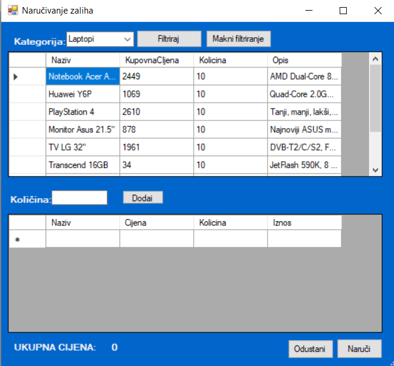

Kada otvorite prozor za naručivanje robe, moći ćete vidjeti dva prikaza, od kojih je donji isprva prazan, a a gornjem se nalazi katalog proizvoda, jednak onome kojeg smo mogli vidjeti na prethodnom prozoru. Donji prikaz zapravo prikazuje robu koju zelimo nabaviti od dobavljača.
Kako bismo mogli naručiti proizvode, moramo ih prvo odabrati s gornjeg kataloga te upisati željenu količinu. Nakon toga možemo pritisnuti gumb "Dodaj" i primjetiti kako se na donjem prikazu nalazi upravo taj proizvod kojeg smo dodali, kao i njegova jedinična cijena, količina i ukupan iznos. Također, postoje i opcije filtriranja proizvoda koje funkcioniraju poput onih na prozoru "Pregled proizvoda".
Nakon odabira željenih proizvoda, možemo potvrditi nabavu proizvoda pritiskom na gumb "Naruči". Ako želimo odustati od naručivanja, možemo pritisnuti gumb "Odustani".